SpatialStatsFFT :: A function to compute spatial statistics
Spatial statistics are a statistical quantification use for materials science information. This page explains the use cases for the function.
All of this work has been developed over the course of a decade by Surya Kalidindi's MINED research group. The MINED research group is developing data driven methods to extract structure-property-processing knowledge from materials science information.
Tony Fast has some presentations up on SlideShare presenting applications of spatial statistics.
Spatial statistics provide an objective and scalable representation of materials science information that can be embedded into machine learning and regression solvers.
An HTML view of this page can be found on GitHub .
Currently, a research paper is being written to support the codes in this repository.
Contents
- Example Dataset
- Encode the information
- Compute some statistics
- autocorrelation of the beta phase
- crosscorrelation of the beta phase with alpha phase
- crosscorrelation of the edges and alpha phase
- Parameters
- Turn off the visualization
- Periodic boundary conditions
- Partial periodic boundary conditions
- Cutoff all vectors to 50
- Cutoff
- Normalize
- Shifting - The Fourier Shift
- Pair Correlation
- Vector Outputs
- Peak Finding
- Find Peaks
- Find Valleys
- Changing Filter Size for Peak Finding
- Find Peaks
- Find Valleys
- References
Example Dataset
addpath( '../functions' ); addpath( '../examples/Data' ); % Read in an Alpha Beta titanium micrograph from Hamish Fraser at OSU. information = double(imread( 'Example.png')); information = information(:,:,1);
Encode the information
% the image has been compressed and has artifacts. black phase is alpha (0) % and white phase is beta (1). this information is segmented out in `encoding` encoding.phase = round( information ./ 255 ); pcolor( encoding.phase ); colormap gray; shading flat title(' white - beta-Ti & black - alpha-Ti ', 'Fontsize', 16 ) snapnow;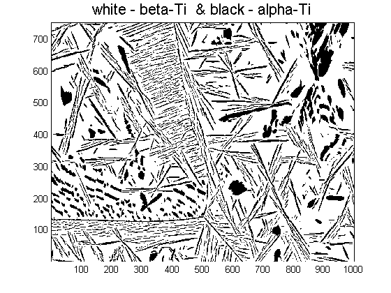
another segmentation could be the grain boundaries
encoding.edge = edge( encoding.phase ); colormap pink pcolor( 1-encoding.edge ); shading flat title(' white - edge & black - grain ', 'Fontsize', 16 )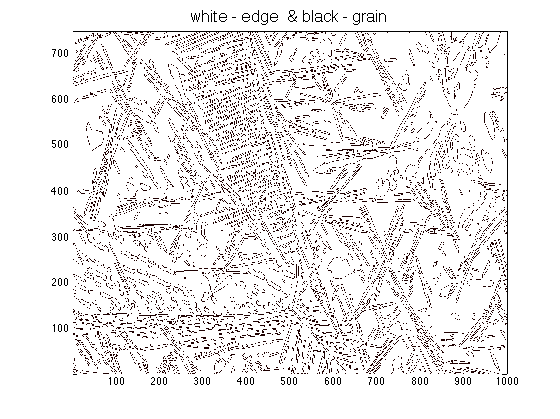
Compute some statistics
autocorrelation of the beta phase
[ T xx ] = SpatialStatsFFT( encoding.phase==1, []); % [ T xx ] = SpatialStatsFFT( encoding.phase, encoding.phase, 'display',false); This is % an autocorrelation too. %%%%%%%% CHANGE COLORMAP %%%%%%%%%%%% % I really like to use cbrewer for different colormaps % http://www.mathworks.com/matlabcentral/fileexchange/34087-cbrewer-colorbrewer-schemes-for-matlab % Go get it or your plots are going to be gross :P try co = cbrewer('div', 'RdYlBu', 26 ); catch co = jet; end colormap( co ); %%%%%%%% COLORMAP %%%%%%%%%%%% hc = colorbar; set( get( hc, 'Ylabel'), 'String',... 'Probability(tail = beta, head = beta )','Fontsize',16);
---------------------------------------------------------------------- The maximum number of colors for table *RdYlBu* is 11 The new colormap will be extrapolated from these 11 values ----------------------------------------------------------------------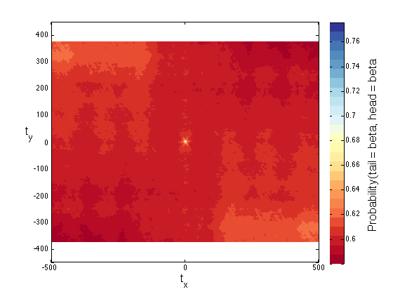
crosscorrelation of the beta phase with alpha phase
[ T xx ] = SpatialStatsFFT( encoding.phase==1, encoding.phase==0); hc = colorbar; set( get( hc, 'Ylabel'), 'String',... 'Probability(tail = beta, head = alpha )','Fontsize',16);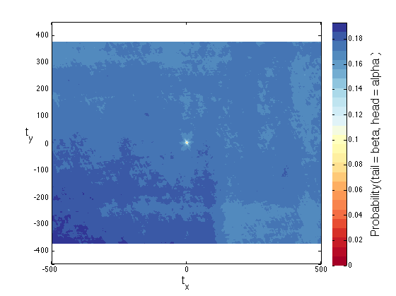
crosscorrelation of the edges and alpha phase
[ T xx ] = SpatialStatsFFT( encoding.edge , encoding.phase==0); hc = colorbar; set( get( hc, 'Ylabel'), 'String',... 'Probability(tail = edge, head = alpha )','Fontsize',16);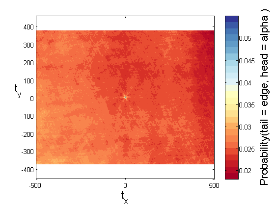
Parameters
The following parameters work for any correlation, but the examples are show on an autcorrelation
Turn off the visualization
[ T xx ] = SpatialStatsFFT( encoding.phase==1, [], 'display', false);
Periodic boundary conditions
[ T xx ] = SpatialStatsFFT( encoding.phase==1, [], 'periodic', true); hc = colorbar; set( get( hc, 'Ylabel'), 'String',... 'Probability(tail = beta, head = beta )','Fontsize',16); figure(gcf)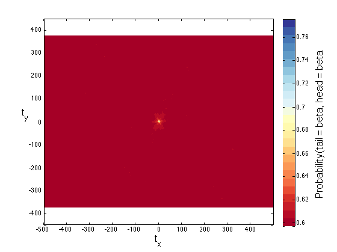
Partial periodic boundary conditions
nonperiodic in the first dim and the periodic in the second
[ T xx ] = SpatialStatsFFT( encoding.phase==1, [], 'periodic', [ false true]); hc = colorbar; set( get( hc, 'Ylabel'), 'String',... 'Probability(tail = beta, head = beta )','Fontsize',16);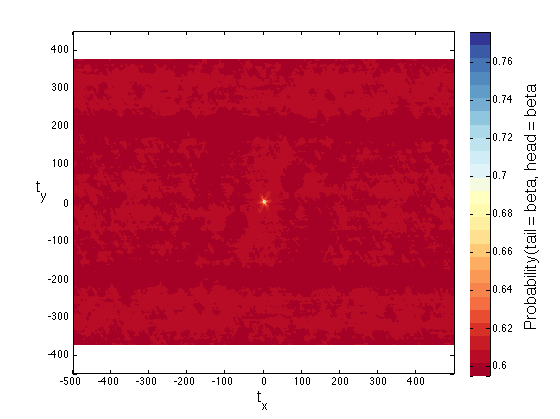
Cutoff all vectors to 50
BAM! Zoom in on it!
[ T xx ] = SpatialStatsFFT( encoding.phase==1, [], 'cutoff', 50); hc = colorbar; set( get( hc, 'Ylabel'), 'String',... 'Probability(tail = beta, head = beta )','Fontsize',16);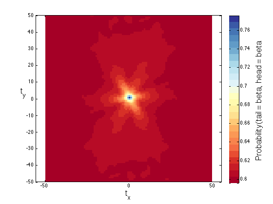
Cutoff
Cutoff of the second dimension to 50 and return all of the rest of the stats
[ T xx ] = SpatialStatsFFT( encoding.phase==1, [], 'cutoff', [Inf 50 ]); hc = colorbar; set( get( hc, 'Ylabel'), 'String',... 'Probability(tail = beta, head = beta )','Fontsize',16);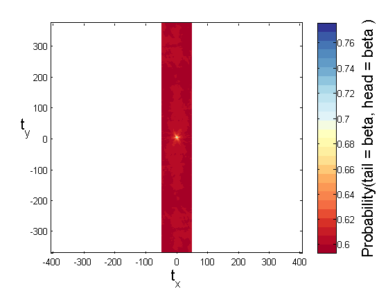
Normalize
If normalize is turned off then SpatialStatsFFT operates as a nice convolution function
[ T xx ] = SpatialStatsFFT( encoding.phase==1, [], 'normalize', false); hc = colorbar; set( get( hc, 'Ylabel'), 'String',... 'Counts(tail = beta, head = beta )','Fontsize',16);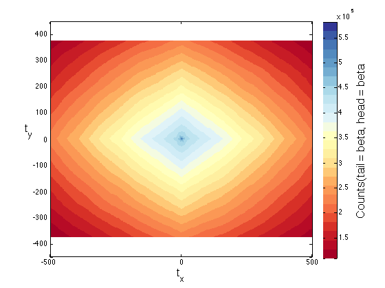
Shifting - The Fourier Shift
The display is suppressed for the sake of argument. It is easy to combine parameters.
[T xx] = SpatialStatsFFT( encoding.phase==1, [], 'shift', true, 'display',false); pcolor(xx.values{2},xx.values{1},real(T)); shading flat; axis equal; xlabel('t_x','Fontsize',16); ylabel('t_y','Fontsize',16, 'Rotation',0); hc = colorbar; set( get( hc, 'Ylabel'), 'String',... 'Counts(tail = beta, head = beta )','Fontsize',16); title('Fourier Shift on') snapnow [T xx] = SpatialStatsFFT( encoding.phase==1, [], 'shift', false, 'display',false); pcolor(real(T)); shading flat; axis equal; xlabel('t_x','Fontsize',16); ylabel('t_y','Fontsize',16, 'Rotation',0); hc = colorbar; set( get( hc, 'Ylabel'), 'String',... 'Counts(tail = beta, head = beta )','Fontsize',16); set( gca,'Yticklabel',xx.values{1}(str2num(get( gca,'YtickLabel'))+1)) set( gca,'Xticklabel',xx.values{2}(str2num(get( gca,'XtickLabel'))+1)) title('Fourier Shift off')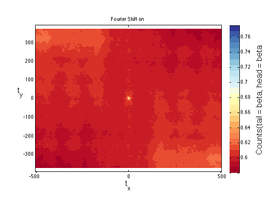 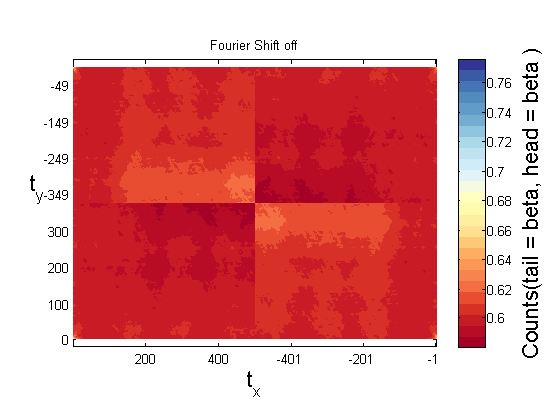
Pair Correlation
The pair correlation is the probability of finding local states h and h' separated by a vector OF MAGNITUDE r. This method computes the spatial correlation function then the pair correlation function. It provides both the mean and standard deviation of the pair correlation function. There is a faster way to do this using Alex Gray's techniques. All the parameters are the same with PairCorrelationFFT as SpatialStatsFFT.
[T S] = PairCorrelationFFT( encoding.phase == 1, [], 'cutoff',50 ); errorbar( 0:(numel(T)-1), T, S,'LineWidth',3,'Color','k' ); xlim([ 0 50*sqrt(2)]);ylim([0 1]) grid on; xlabel('|t| (pixel)','Fontsize',16); ylabel('Probability');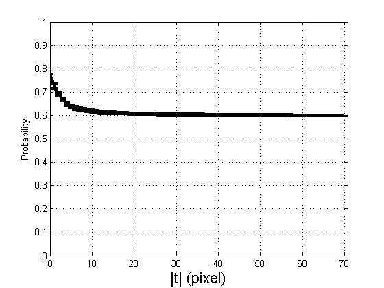
Vector Outputs
Vector outputs have two applications.
- When the statistics are used as a feature vector directing the output to a vector mitigates an intermediate resizing step.
- Sorting the strong peaks in the statistics
[T xx] = SpatialStatsFFT( encoding.phase == 1, [], 'vector', true,'display',false ); sortT = flipud(sortrows([T,xx],1)); maxi = 15; s = sprintf('Display the %i strongest peaks and their associated vectors',maxi); disp(s); s = sprintf('-----------------------------'); disp(s); s = sprintf('Probability|t Vectors---->'); disp(s); disp( sortT(1:maxi,:) );
Display the 15 strongest peaks and their associated vectors
-----------------------------
Probability|t Vectors---->
0.7732 0 0
0.7255 -1.0000 252.0000
0.7255 0 -252.0000
0.7208 0 1.0000
0.7208 0 -253.0000
0.7004 0 -251.0000
0.7004 -1.0000 -1.0000
0.6991 -1.0000 253.0000
0.6991 1.0000 496.0000
0.6824 -2.0000 -497.0000
0.6824 1.0000 497.0000
0.6740 0 -254.0000
0.6740 0 2.0000
0.6710 -2.0000 -496.0000
0.6710 2.0000 244.0000
Peak Finding
- Compute Statistics
- Pass statistics to Peak Finder - Peak output is a logical array of where the peaks are located in the matrix.
- Find vectors associated with peaks.
filtersz = 5; [ T xx ] = SpatialStatsFFT( encoding.phase==1, []);
Find Peaks
P = FindPeaksSSFFT(T); [ ip jp ] = find( P );
Find Valleys
P = FindPeaksSSFFT(T,'valley', true); [ iv jv ] = find( P ); hold on; h(1) = plot( xx.values{2}(jp), xx.values{1}(ip), 'ko'); h(2) = plot( xx.values{2}(jv), xx.values{1}(iv), 'mx'); hold off; colormap(1- gray);legend( h, 'Peaks','Valleys') title( sprintf( 'Filter Size = %i pixels with %i peaks and %i valleys', filtersz, numel(ip), numel(iv) ),'Fontsize',16); snapnow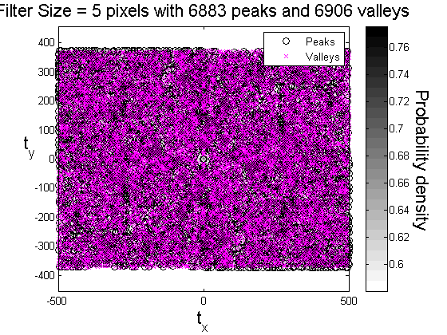
Changing Filter Size for Peak Finding
The filter size can be change to improve the granularity using the parameter 'neighborhood' which reduces the number of peaks found.
filtersz = 21; [ T xx ] = SpatialStatsFFT( encoding.phase==1, []);
Find Peaks
P = FindPeaksSSFFT(T,'neighborhood',filtersz); [ ip jp ] = find( P );
Find Valleys
P = FindPeaksSSFFT(T,'valley', true,'neighborhood',filtersz); [ iv jv ] = find( P ); hold on; h(1) = plot( xx.values{2}(jp), xx.values{1}(ip), 'ko'); h(2) = plot( xx.values{2}(jv), xx.values{1}(iv), 'mx'); hold off; colormap(1- gray);legend( h, 'Peaks','Valleys') title( sprintf( 'Filter Size = %i pixels with %i peaks and %i valleys', filtersz, numel(ip), numel(iv) ),'Fontsize',16);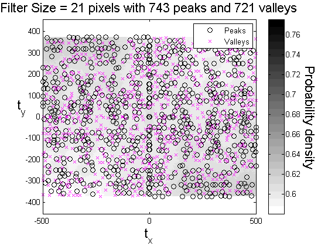
References
- Niezgoda, S.R., Kanjarla, A.K., and Kalidindi, S.R., "Novel microstructure quantification framework for databasing, visualization, and analysis of microstructure data". Integrating Materials and Manufacturing Innovation, 2013. 2:3.
- Kalidindi, S.R., Niezgoda, S.R., and Salem, A.A., "Microstructure informatics using higher-order statistics and efficient data-mining protocols". Jom, 2011. 63(4): p. 34-41.
- Niezgoda, S.R., Yabansu, Y.C., and Kalidindi, S.R., "Understanding and Visualizing Microstructure and Microstructure Variance as a Stochastic Process". Acta Materialia, 2011. 59: p. 6387-6400.
- Fullwood, D.T., Niezgoda, S.R., Adams, B.L., and Kalidindi, S.R., "Microstructure sensitive design for performance optimization". Progress in Materials Science, 2010. 55(6): p. 477-562.
- Niezgoda, S.R., Fullwood, D.T., and Kalidindi, S.R., "Delineation of the space of 2-point correlations in a composite material system". Acta Materialia, 2008. 56(18): p. 5285-5292.
- Fullwood, D.T., Niezgoda, S.R., and Kalidindi, S.R., "Microstructure reconstructions from 2-point statistics using phase-recovery algorithms". Acta Materialia, 2008. 56(5): p. 942-948.
- Adams, B.L., Gao, X., and Kalidindi, S.R., "Finite approximations to the second-order properties closure in single phase polycrystals". Acta Materialia, 2005. 53(13): p. 3563-3577.